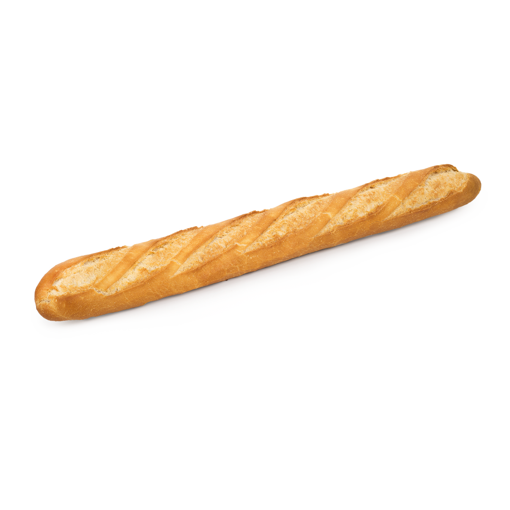

Baguette

A baguette is a French bread known for its long and thin nature.
It's often made from basic lean dough, and it's very distinguisable by
its length and crust.
Baguettes are used for many dishes such as the famouse submarine sandwich
and also paninis. They are slices and served often with cheese.
Ingredients
- 6 cups all-purpose flour (depending on a brand, you may need to add more flour)
- 3 cups lukewarm water
- 2 tsp yeast
- 2 tsp salt
Steps
- The night before, combine all ingredients together. First mix the dry ingredients together and then add water. Mix the ingredients until the dough comes together.
Cover it with a plastic wrap and let it sit for 12-20 hours on the countertop.
- The following day, the dough should be wet, sticky and bubbly. Generously flour your hands and the baking sheet.
- Take the dough (if it sticks, apply more flour to your hands) and form a baguette shape. You will easily get atleast 2-3 baguettes.
- Preheat the oven to 450 °F. You will need to have 2 shelves in an oven. Fill a deep baking pan with 2 cups of hot boiled water, and place
it on the lower rack, inside your oven. This will make the bread crispy on the outside. Place the bread on the middle rack.
Remove water from the oven after 10 minutes. Keep on baking the bread for another 30 minutes or until golden crispy brown.